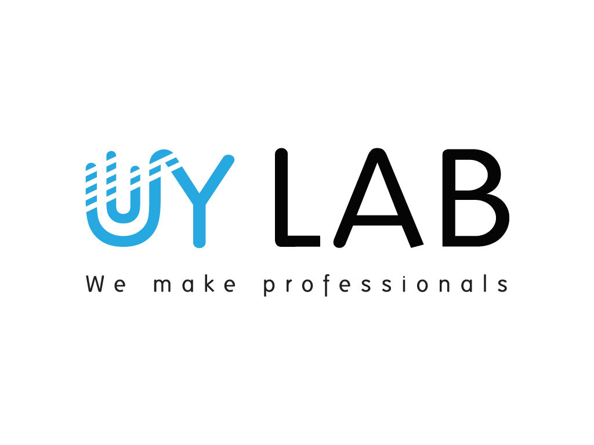
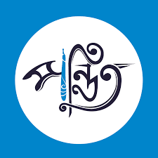
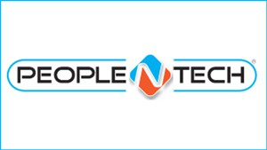
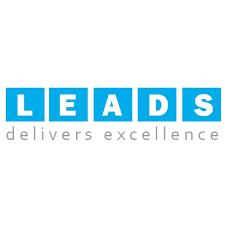

Class-06

Home।।
About।।
Course।।
Contact Us
 BASIS-SEIP Project Tranche-3
BASIS-SEIP Project Tranche-3
Introduction:
The partnership between Skills Development Coordination and Monitoring Unit (SDCMU), Skills for Employment Investment Program (SEIP) under Finance Division and BASIS in the software and information services field were started back in March, 2015. In continuation, BASIS and SDCMU signed a Contract on Grants for providing skills training to 7450 people in the ICT sector for two years. Below is a brief overview of Tranche-3 of the BASIS-SEIP Project.
Project Brief:
Objective:
The main objective of the BASIS-SEIP Tranche-3 project is to provide IT/ITES training to the targeted population and produce skilled manpower for the ICT sector to meet the growing skills demand of the ICT job market.
Duration:
January 2021 – December 2022
Expected Outputs:
Training target-
✓ 6650 new entrants completed skills training in 11 ICT courses in IT/ITES sector
✓ 800 people to be upskilled and certified in 8 ICT courses (among them 300 to be vendor certified)
Employment target-
✓ 60% of new entrant graduates to be employed within 3 months of the completion of training and certification and with
minimum 3 months retention in jobs.
✓ 90% of upskilled graduates to be employed.
Target Groups:
✓ Special focus to include people from the diversified groups including low skilled, university dropouts, people with
disabilities, poor,indigenous people and small ethnic community people (SECP).
✓ Education Level: SSC with Diploma in any subject
✓ Age group: 18 – 50 years
✓At least 30% of female enrollment
Courses: (For details, click on the course title)
» Courses for New Entrants
(Courses for fresh people who are want to build IT skills and a career in this sector):
(1) Customer Services
(2) IT Sales
(3) Web Design
(4) Graphics & UI Design
(5) 2D and 3D Animation
(6) Professional Digital Marketing
(7) E-Commerce Entrepreneurship
(8) Mobile App Dev-Android
(9) Web App Dev-Dot Net
(10) PHP with Laravel Framework
(11) Server Administration
» Course for Upskilling
(Courses for people who are already working in ICT sector)
(1) Software Design and Architecture
(2) Big Data, Data Analytics & Data Science
(3) Information System Security Management
(4) Network Administration using CISCO
» Vendor Certification Courses for Upskilling
(Courses for people who are already working in ICT sector
(1) Software Testing (ISTQB 2018)
(2) PMP Certification (3) Cloud Service Management
(4) Certified Programmer in Python (PCAP, PCPP1 & PCPP2)
Partner Training Institutes:
For more information, please click on the logo of the partner training institutes.




Facebook।।
Twitter।।
Linkedin।।
YouTube